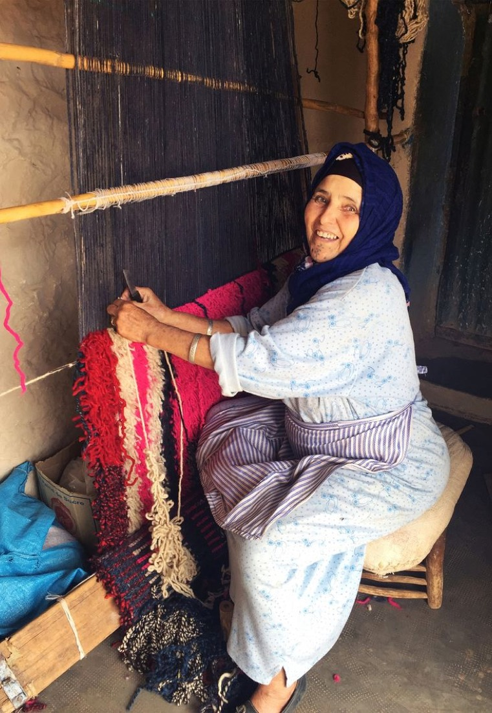
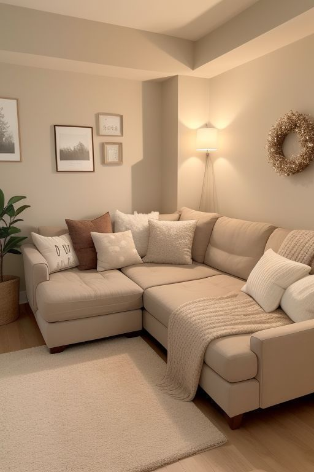
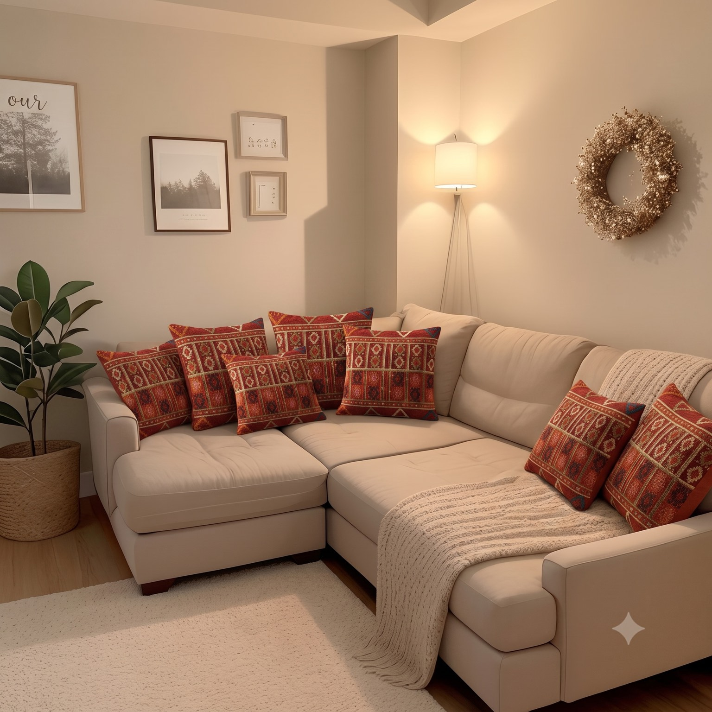

وسادة منسوجة يدوياً على النول، بصوفٍ مغزولٍ ومصبوغٍ باليد، وبنقوشٍ ورثتها صانعتها عن جدّتها.
حكاية الصنعة
قبل الإسمنت، كانت بيوتنا منسوجة.
بيت الشعر نفسه كان نسيجاً: تغزله نساء البادية من صوف الغنم ووبر الإبل، خيطاً فوق خيط، حتى يصير جداراً وسقفاً وظلاً.
هذه الصنعة اسمها السدو. لم تكن زخرفةً يوماً، بل ذاكرة البادية مكتوبةً بالخيط: لكل نقشةٍ معنى، ولكل لونٍ مكان، وكل امرأةٍ تورّث بناتها نقوشها كما تورّثهنّ اسمها.
هذه الوسادة نُسجت بالطريقة نفسها التي نسجت بها جدّاتنا بيوتهنّ.
صوفٌ ويدٌ وصبرٌ طويل.

الصانعة
أم فارس، من بادية مادبا.
تعلّمت النسج وعمرها تسع سنين، على نول جدّتها المنصوب أمام بيت الشعر. كانت تحسبه لعباً، حتى قالت لها جدّتها: هذا النول عاش قبلك، وسيحكي عنك بعدك.
من يومها وهي تغزل الصوف بيدها، وتصبغه بما تعطيه الأرض: الرمّان للأحمر، وقشور البصل للذهبي، والجذور لما بينهما.
حين رحل زوجها، لم يكن في البيت غير النول. نسجت عليه قوت أولادها، وعلّمت بناتها ما علّمتها إياه جدّتها.
كل وسادة تخرج من يدها فيها شهرٌ من عمرها. وحين تدخل بيتك، يدخل معها كل هذا.
أنا ما أنسج صوفاً. أنا أنسج عمري.
جرّبها في غرفة
نفس الكنبة. نفس الغرفة. روحٌ أخرى.
غرفة جلوس حديثة كما تُباع في كل مكان.
ثم دخلت الوسائد.


الخلاصة
لا تشتري وسادة.
تشتري شهراً من عمر امرأة، ونقوشاً تتوارثها الجدّات، وحكايةً تدخل بيتك وتبقى.
تشتري حكاية.